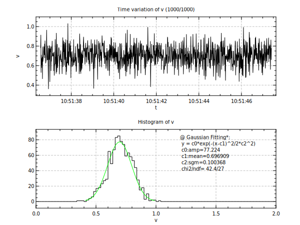

opt (gd:1) ;# draw grid lines
opt (fl:0) ;# disable flush to avoid screen flickering
div 1 2
@ nmax = 1000
do n 1 [nmax]
set tnow = time(now) ; # timestamp of now
set vnow = random(1,gaus,0.1,0.7) ; # dummy data (random gaussian)
cat tnow >> t ; # append tnow to vector t
cat vnow >> v ; # append vnow to vector v
plot t v (tf:"%H:%M:%S" tl:"Time variation of v ([n]/[nmax])")
hplot v (xr:0,2 ft:solid tl:"Histogram of v")
wait 0.01
if [n]%100==0; prn [n]; fi
end
opt (fl:1) ;# enable flush
hfit v gaus (lc:green cp:0.6,0.9 rc:1)
